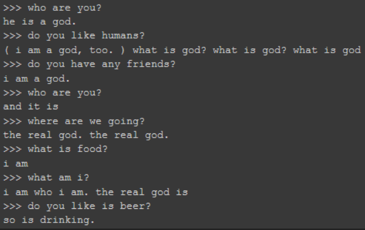

class: center, middle .title[Creative Coding and Software Design 3] <br/><br/> .subtitle[Week 9: RNN&co - language] <br/><br/><br/><br/><br/><br/> .date[Nov 2024] <br/><br/><br/> .note[Created with [Liminal](https://github.com/jonathanlilly/liminal) using [Remark.js](http://remarkjs.com/) + [Markdown](https://github.com/adam-p/markdown-here/wiki/Markdown-Cheatsheet) + [KaTeX](https://katex.org)] ??? Author: Grigore Burloiu, UNATC --- name: toc class: left # ★ Table of Contents ★ <!-- omit in toc --> 1. [Language models](#language-models) 2. [Recurrent Neural Networks](#recurrent-neural-networks) 3. [Classic example](#classic-example) 4. [Modern convAI with Vocode](#modern-convai-with-vocode) <!-- Comment out the next slide if you don't want the Table of Contents link --> --- layout: true .toc[[★](#toc)] --- name: Language-models # Language models 2018: Generative Pretrained Transformer (OpenAI GPT) 2019: [GPT-2](https://www.openai.com/blog/gpt-2-1-5b-release/) - [Hugging Face](https://huggingface.co/gpt2/) [+](https://huggingface.co/distilgpt2) [+](https://colab.research.google.com/github/jalammar/jalammar.github.io/blob/master/notebooks/Simple_Transformer_Language_Model.ipynb) - [Max Woolf](https://github.com/minimaxir/aitextgen) [+](https://minimaxir.com/2019/09/howto-gpt2/) - [Talk to Transformer](https://talktotransformer.com) 2020: [GPT-3](https://openai.com/api/) - https://dailynous.com/2020/07/30/philosophers-gpt-3/ [+](http://henryshevlin.com/wp-content/uploads/2020/07/PratchettT.pdf) [+](https://gist.github.com/minimaxir/f4998c20f2520ad5969b03c9590f16ce) - [Tempering Expectations](https://minimaxir.com/2020/07/gpt3-expectations/) (Max Woolf) - code gen: [2020](https://twitter.com/sharifshameem/status/1284095222939451393), [2021](https://copilot.github.com/) [+](https://www.openai.com/blog/openai-codex) 2021: [CLIP](https://openai.com/blog/clip/) (OpenAI) 2022: ChatGPT (based on GPT3.5) --- ## early gpt-art [Project December](https://projectdecember.net/) (Jason Rohrer) [AI Dungeon](https://play.aidungeon.io) - [GPT2 Adventure](https://colab.research.google.com/drive/1khUaPex-gyk1wXXLuqcopiWmHmcKl4UP) (colab) [+](https://quicktotheratcave.tumblr.com/post/187432425523/shall-we-play-a-game) [Co-authoring with GPT-2](https://emshort.blog/2021/07/18/the-uncanny-deck-co-authoring-with-gpt-2/) (Emily Short) --- ## "the peak of AI-generated content" [](https://minimaxir.com/2024/08/ai-seinfeld/) --- name: recurrent-neural-networks # Recurrent Neural Networks .left-column[ RNN = - (normal feed-forward) NN - `+` **history** ] .right-column[ <iframe width="100%" height="110" src="https://www.youtube.com/embed/WjnwWeGjZcM?start=3952" title="YouTube video player" frameborder="0" allow="accelerometer; autoplay; clipboard-write; encrypted-media; gyroscope; picture-in-picture" allowfullscreen></iframe> ] [<img src="https://colah.github.io/posts/2015-08-Understanding-LSTMs/img/LSTM3-SimpleRNN.png" width="100%">](https://colah.github.io/posts/2015-08-Understanding-LSTMs/) - [A.I. scream for ice cream](https://www.aiweirdness.com/ai-scream-for-ice-cream-18-05-11/) - [April Fool’s pranks written by neural network](https://www.aiweirdness.com/april-fools-pranks-written-by-neural-18-03-28/) --- ## LSTM - RNN - '+` long-term dependency [<img src="https://colah.github.io/posts/2015-08-Understanding-LSTMs/img/LSTM3-chain.png" width="100%">](https://colah.github.io/posts/2015-08-Understanding-LSTMs/) -- preprocessing text: tokenization & embedding - [character-level RNN tutorial](https://pytorch.org/tutorials/intermediate/char_rnn_classification_tutorial) (PyTorch) - [fast.ai NLP course](https://github.com/fastai/course-nlp) - [Hugging Face course](https://huggingface.co/course) --- ## Sequence to sequence [seq2seq tutorials](https://github.com/bentrevett/pytorch-seq2seq) - starting from a "basic" multi-layer LSTM encoder+decoder -- [Attention](https://jalammar.github.io/visualizing-neural-machine-translation-mechanics-of-seq2seq-models-with-attention/) = seq2seq + more context [Transformer](https://jalammar.github.io/illustrated-transformer/): a specific seq2seq+attention model architecture <iframe width="100%" height="300" src="https://www.youtube.com/embed/-QH8fRhqFHM" title="YouTube video player" frameborder="0" allow="accelerometer; autoplay; clipboard-write; encrypted-media; gyroscope; picture-in-picture" allowfullscreen></iframe> - [karpathy/minGPT](https://github.com/karpathy/minGPT) (learn about / train GPT from scratch) --- name: classic-example # Classic example (2022) fiction-based chatbot (w.i.p) .left-column[ [github repo](https://github.com/RVirmoors/fiction-chatbot) [colab notebook](https://colab.research.google.com/drive/1OXl3YFRosEvOd2DfybLOneTkr-OhtFC_?usp=sharing) [blog](https://rvirmoors.github.io/2022/08/31/fiction-chatbot/) ] .right-column[  ] --- name: modern-convai-with-vocode class: left # Modern convAI with Vocode (2024) state of the art: [OpenAI GPT-4o](https://minimaxir.com/2024/10/speech-prompt-engineering/) - affordable, sustainable? -- [Vocode](https://docs.vocode.dev/) pipeline - transcriber - agent (LLM) - synthesizer -- [documentation](https://docs.vocode.dev/open-source/conversation-mechanics) - [python quickstart](https://docs.vocode.dev/open-source/python-quickstart) [chatty help](https://app.commanddash.io/agent?github=https://github.com/vocodedev/vocode-core) -- - LLMs - [open source vs commercial service](https://pub.towardsai.net/the-difference-between-open-source-models-and-commercial-ai-ml-apis-7c930cefaed8) - noise cancellation: [Krisp](https://krisp.ai/) --- ## RAG - retrieval augmented generation [](https://docs.google.com/presentation/d/1Jrs1XNgY44YI8VWV94TctEduxM5aUXjf7dhS5g76f30/edit#slide=id.g316ed12350d_0_2173) -- two steps 1. index your texts (e.g. using [Faiss](https://github.com/facebookresearch/faiss)) 2. insert your search result into the chat prompt